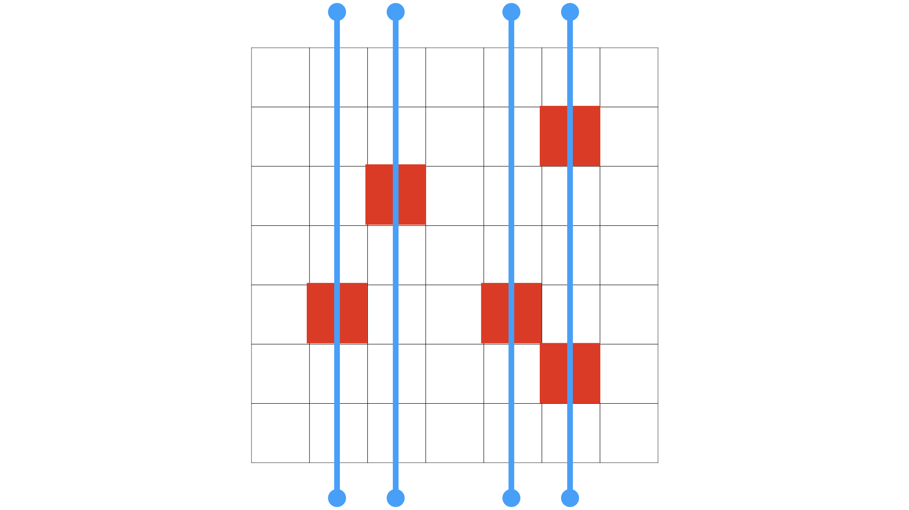
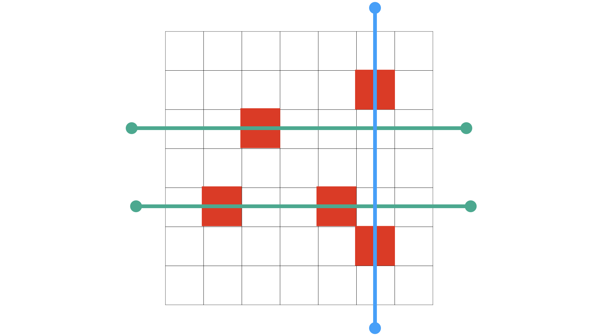
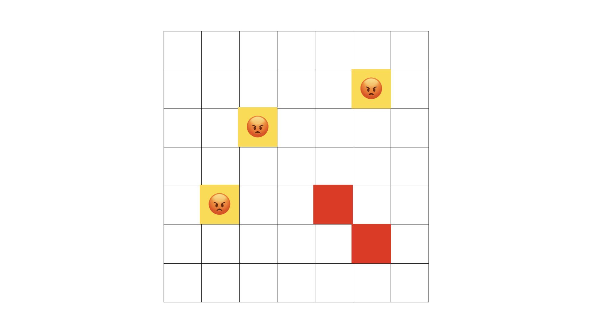
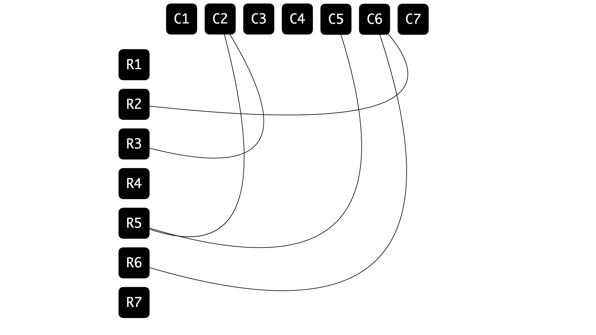
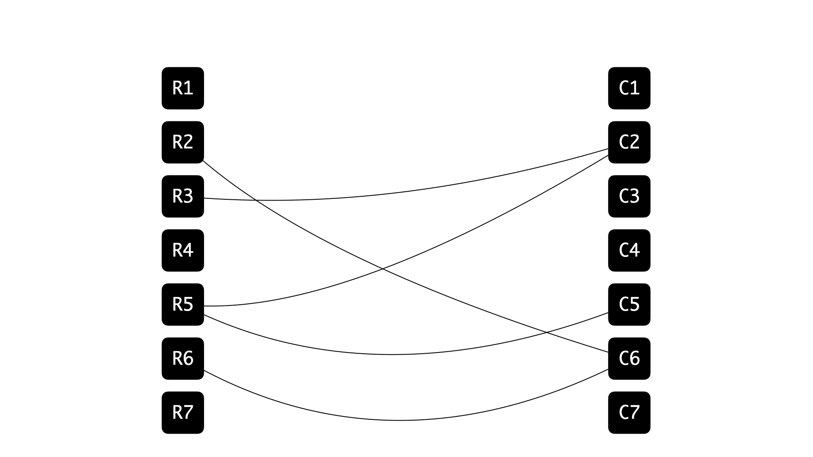
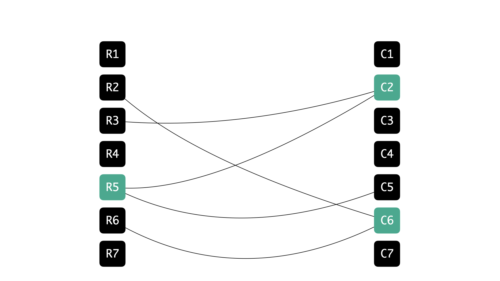
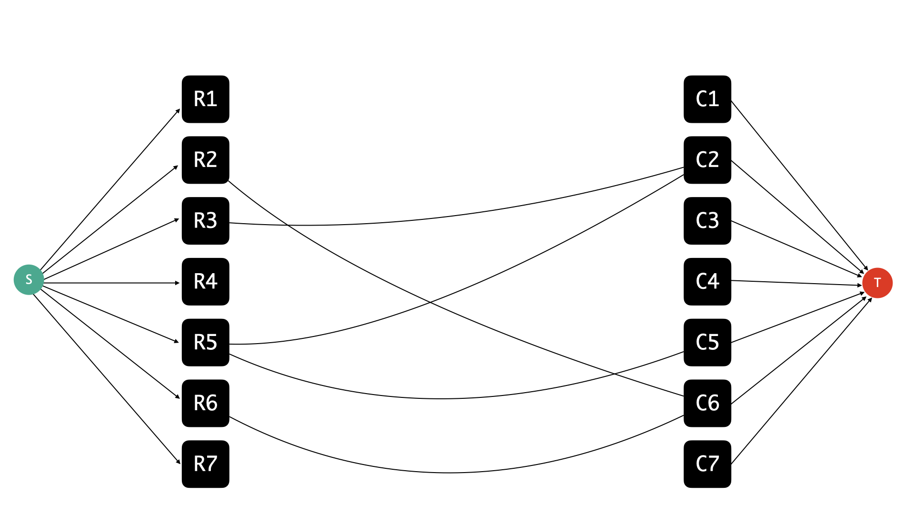
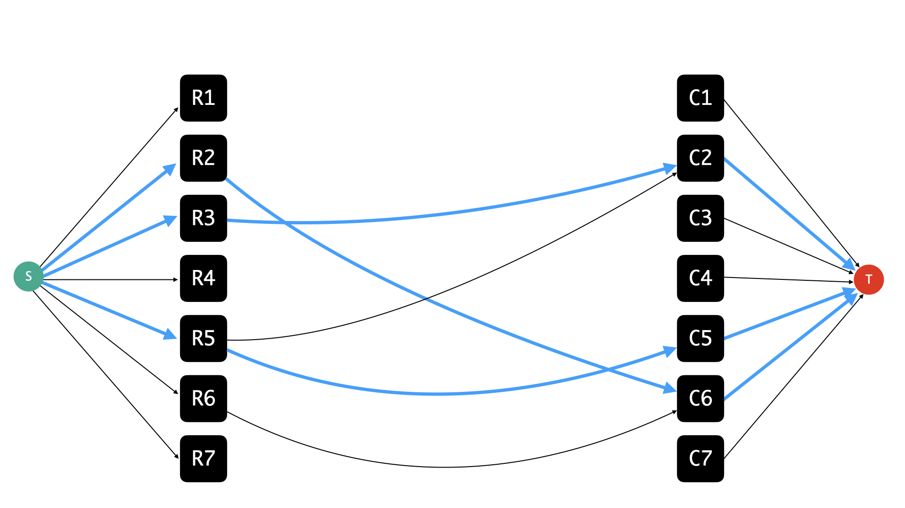
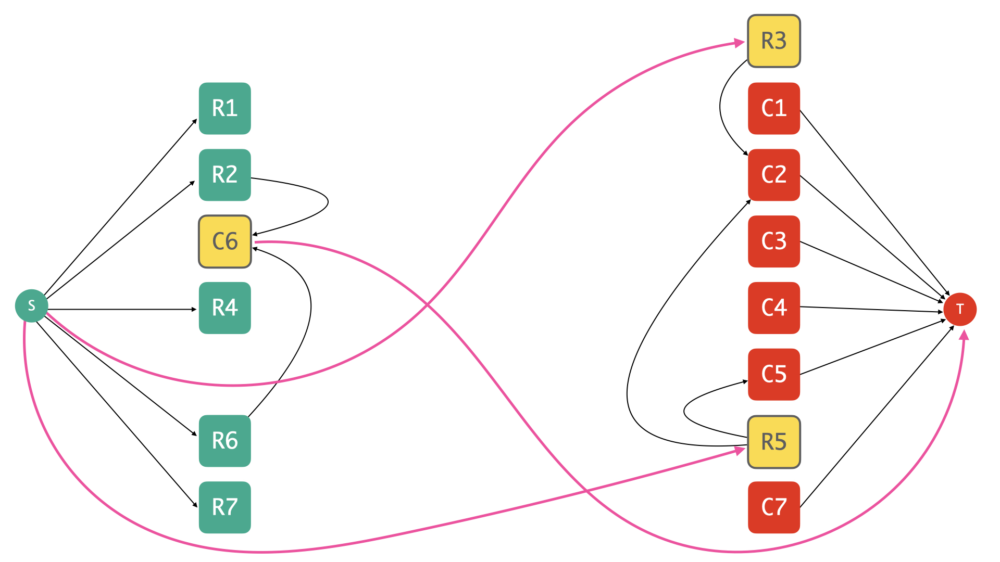

This is mostly about solving Sam I Am (UVa 11419); en route, we will end up discovering Kőnig’s theorem, which is a delightful fact about the special relationship shared by vertex covers and maximum matchings in bipartite graphs.
The Problem
Here’s an abridged version of the problem statement.
Sam is facing a temple which can be described by a m \times n grid and he has the locations of all enemies in the temple (each location can be thought of as the intersection of a row and a column in this grid).
All of a sudden, he realizes that he can kill the enemies without entering the temple using the great cannon ball which spits out a gigantic ball bigger than him killing anything it runs into and keeps on rolling until it finally explodes.
But the cannonball can only shoot horizontally or vertically and all the enemies along the path of that cannon ball will be killed.
Sam wants to know the minimum number of cannon balls and the positions from which he can shoot the cannonballs to eliminate all enemies from outside that temple. >
Some initial observations with an example
So to begin with, we have a grid with some cells identified as locations where Sam’s enemies are positioned, and here’s an example:

We want to hit all of these locations, and what we have at our disposal is giant cannon balls which can destroy all enemies that are positioned on a single row, or a single column. For example, if we were obsessed about only firing along rows, we would need four cannon balls to tackle ’em all, like so:

If Sam was superstitious about shooting along columns only, then he would again need four of these cannon balls to take care of everything:

However, our friend Sam is smart, not superstitious! And if there is anything that he is obsessed about, it is ruthlessly optimal destruction! In other words, he wants to fix everything up, but while using the smallest number of cannon balls possible… and if that means mixing up ranks and files, so be it — notice that you can manage with just three once you combine the use of both axes:

And for this example in particular, notice that three cannon balls are necessary, because we have at least three enemies positioned at locations that share neither a row nor a column, implying that no row-fire or column-fire can handle more than one of these locations at once:

So for this example, we know that:
- three cannon balls are necessary &
- three cannon balls are sufficient.
In general, let’s say that two enemy positions are mutually independent if they are on different columns and on different rows. Let k be the size of a largest collection of mutually independent positions. Then it is clear that:
- k cannon balls are necessary to handle all enemy locations;
because any \ell fires that handle all enemy locations must in particular handle these k mutually independent ones, and each individual fire can get to (at best) one of them — by definition of what it means for two positions to be mutually independent. So if we have a valid solution involving \ell cannon balls, then \ell \geq k.
What is a less obvious, but considerably fascinating, is the fact that:
- there is always a strategy to hit all locations using just k cannon balls. 🤯
A striking situation, no pun intended — the obvious estimate of what is needed turns out to be enough as well! The easy lower bound has a matching upper bound ❤️
An auxiliary graph
Alright, I think that’s enough with the advertising.
How does this work?
Let’s construct the following graph G = (V,E) associated with the grid and the information about enemy positions:
- Introduce a vertex for every row in the grid; say r_i for 1 \leq i \leq m. These are the row vertices.
- Introduce a vertex for every column in the grid; say c_j for 1 \leq j \leq n. These are the column vertices.

- Introduce the edge (r_i,c_j), 1 \leq i \leq n; 1 \leq j \leq m if and only if the location at the intersection of the i^{th} row and the j^{th} column corresponds to an enemy position.


Observe that:
- Any matching in G (a collection of mutually disjoint edges) corresponds to a collection of mutually independent enemy positions back in the grid.
- What we are looking for is a smallest-sized subset S of V(G) such that every edge e in G has at least one of its endpoints in S. Such a subset is called a vertex cover.

So our claim in the language of grids now translates to:
📝 The size of a maximum matching in G is equal to the size of a minimum vertex cover in G.
in the language of graphs. Keep in mind that as graphs go G, happens to be a bipartite graph; which is to say that its vertex set can be parittioned into two parts† such that every edge has exactly one endpoint in each part.
Bring in the flows
Is this much ado for nothing? We seem to have done some translation work, but there’s no proof of this bold claim in sight just yet… 😬
Fair. So here’s a roadmap for what we plan to do next:
- Use the graph G as the basis of a flow network.
- Recall the maxflow-mincut duality.
Profit.Show the duality that we are interested in by hooking it up the known one.
So first things first: we are going to setup a flow network around the graph G, and here’s a partial picture of what it looks like:

Here’s the official description of how we build this up:
- Start with the graph G, and orient every edge between a row vertex and a column vertex so that every such edge originates from the row vertex and latches on to the column vertex.
- We assign infinite capacities to all the edges in G. Go unlimited on the originals! We will even dub these edges original edges going forward.
- Add a source vertex s and add unit-capacity edges (s,r) for every row vertex r. We will call these edges the row selectors.
- Add a target vertex t and add unit-capacity edges (c,t) for every column vertex c. We will refer to these edges as column selectors.
That’s it, that’s the flow network (\tilde{G},\kappa) based on G, where I’m using \kappa to denote the capacity function. Now let’s stare at any valid integral flow in this network — what does it pull out from the middle? 🤔

Let’s make the following quick observations in the context of a valid integral flow f in (\tilde{G},\kappa):
- The flow on any edge e from G (i.e, an original edge) is either zero or one. Indeed, if f(e) > 1, then we violate conservation constraints at both endpoints of e.
- For any row or column vertex, at most one original edge incident to it is used by the flow f. In other words, f(e) = 0 for all but at most one original edge incident to any row or column vertex. Again, if not, combined with the fact that f is integral and that the row and column selectors have unit capacity, we will violate conservation constraints on the vertex under consideration.
Based on these observations, we have that the set of original edges for which f(e) = 1 forms a matching in back in G, and in particular, if f was maximum flow, then this set would correspond to a maximum-sized matching. Now, let’s look at the corresponding mincut by building the residual graph:

Edges in the residual graph that have a residual capacity of zero are not shown. Also, the original edges that were used by f have infinite residual capacity but their corresponding back-edges have unit capacity, but this distinction is not emphasised in the picture because it’s not particularly relevant to our discussion.
and considering what vertices are reachable from s:

The vertices reachable from s are marked green, while all remaining vertices are marked red.
In the residual graph, I would like to draw your attention to:
- row vertices that are unreachable from s,
- column vertices from where it is impossible to reach t.
We will refer to these vertices as the misfits — they are highlighted for you in the picture below:

Now roll up your sleeves for some magic. Let’s pull up the cut — which we know is in fact a mincut — obtained by considering the set of vertices reachable from s the residual graph corresponding to the maxflow f. In pictures, note how we have attracted some column vertices to the s-side, and pushed away some row vertices to the t-side:

Note that this is a minimum cut, that is to say, the total capacity of the edges crossing the cut is as small as possible — which means that, in particular, the total capacity is at least (or should that be at most?) finite, and that implies, even more particularly, that none1 of the original edges cross this cut.
1 Remember how their capacities were infinite? So they just cannot afford to cross a minimum-capacity cut.
So every original edge is confined to the s-camp or the t-camp; but note that every original edge is an edge between a row vertex and a column vertex; so if you put two and two together, you see that, in fact, every edge must be incident to a misfit vertex. This means that the misfits are what we were looking for all along — they form a vertex cover of G!
So at least we have some solution. Is this the best we can hope for?
Why yes!
Note that every misfit vertex contributes exactly one unit-capacity edge to the minimum cut: the misfits on the s-side are incident to column selectors, and these edges connect with t on the other side; while misfits on the t-side are incident to row selectors, and these edges connect with s, which is again on the opposite end. So every misfit vertex contributes exactly one edge to the minimum cut — and there are no other edges that cross the cut, so we have the following sequence of equalities:
- size of the proposed solution = #misfits
- #misfits = capacity of the minimum cut
- capacity of the minimum cut = value of the maximum flow
- value of the maximum flow = size of a maximum matching back in G
- size of a maximum matching back in G = lower bound on our solution
Therefore, we have proposed a solution whose cost matches a lower bound on it, making it optimal! With a slight adjustment of language (dropping misfits in favor of vertex cover), the sequence of inequalities above also shows that the size of a minimum vertex cover in a bipartite graph equals the size of a maximum matching in the graph.
This was the relationship I’d promised to cover when we started, and it goes by Kőnig’s theorem in case you’d like to find out more — the argument we came up with here isn’t perhaps the traditional proof, and this is a fact that can be established in several different ways, all fun in their own way ❤️